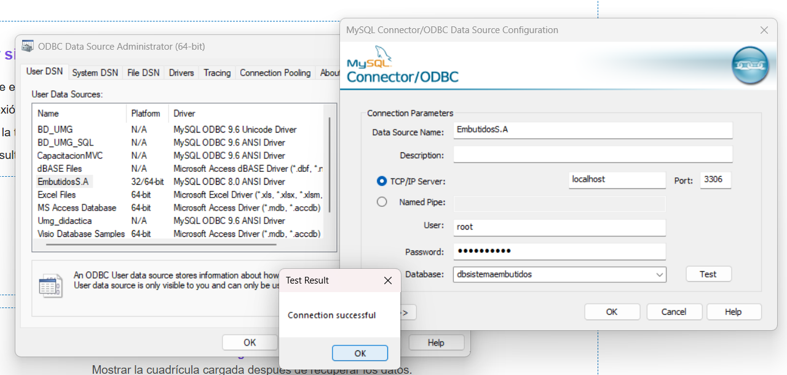

Cómo se conecta realmente
Ruta exactacodigo\componentes\seguridad\Seguridad\CapaModelo_Seguridad\Repositorios\ClsConexion.csClase y dato que se modificanClase: CapaModelo_Seguridad.ClsConexion - Constructor: ClsConexion() - Campo: _ConnectionString
Navegador reutiliza la conexión de Seguridad. La cadena actual está en:
codigo\componentes\seguridad\Seguridad\CapaModelo_Seguridad\Repositorios\ClsConexion.cs
_ConnectionString = "Dsn=EmbutidosS.A";No está en App.config. El servidor, puerto, usuario y base de datos se configuran normalmente dentro del DSN de Windows.

Configurar el DSN
- Abra Orígenes de datos ODBC (64 bits).
- En “DSN de sistema” o “DSN de usuario”, cree o edite un origen con MySQL ODBC 8.x de 64 bits.
- Use exactamente
EmbutidosS.A, salvo que también cambie la cadena enClsConexion.cs. - Indique servidor, puerto, usuario y contraseña autorizados.
- En el campo de base de datos predeterminada seleccione la base que contiene la tabla del CRUD y las tablas requeridas por Seguridad.
- Pruebe la conexión y vuelva a compilar.

Qué cambiar según el caso
| Necesidad | Cambio |
|---|---|
| Otro servidor, usuario, puerto o base | Editar el DSN en Windows. |
| Otro nombre de DSN | Cambiar Dsn=EmbutidosS.A en ClsConexion.cs y recompilar. |
| Otra tabla en la misma base | Cambiar el primer parámetro de NavegadorMetConfigurar. |
Cambiar
ClsConexion.cs afecta también a Seguridad y a los componentes que heredan esa conexión.